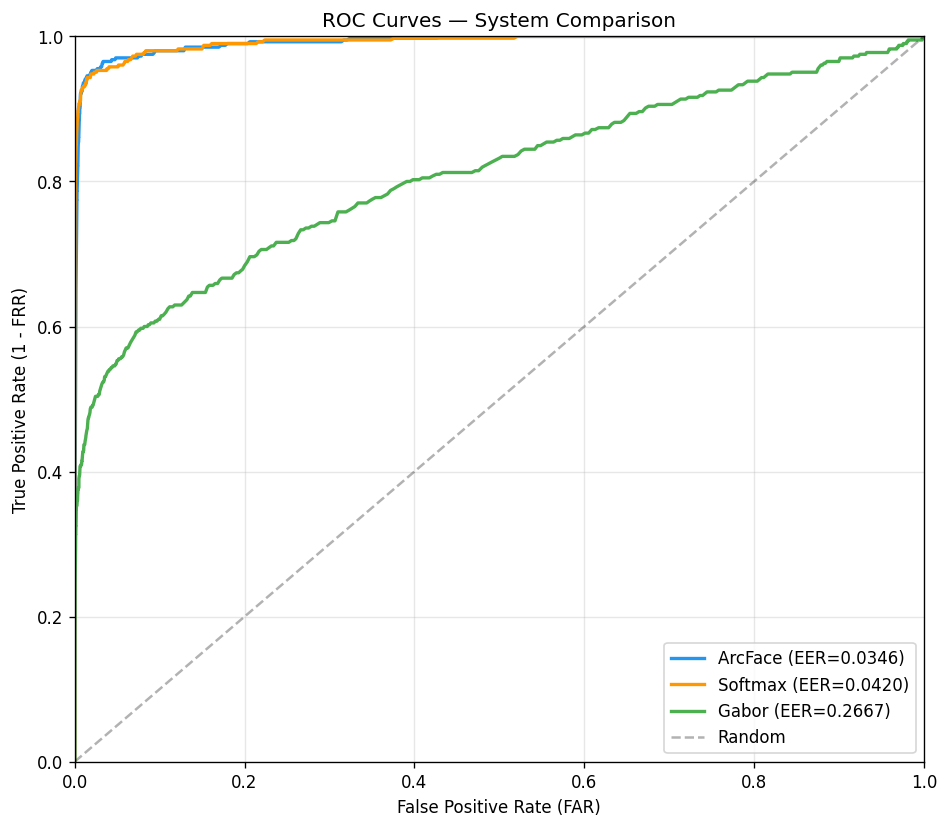
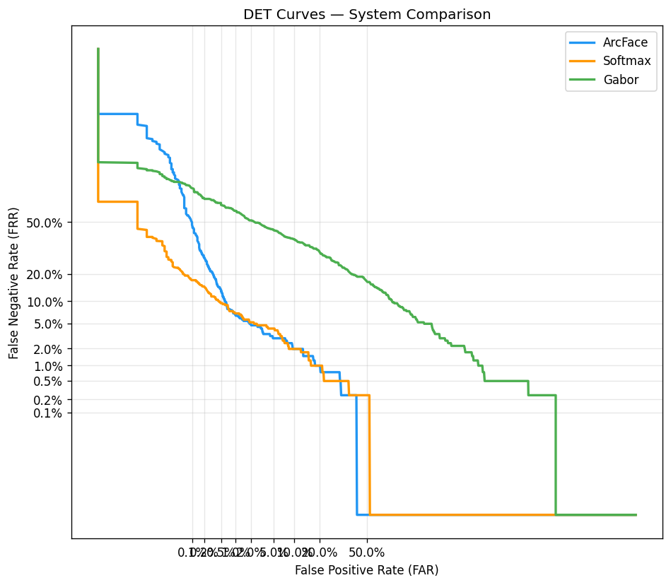
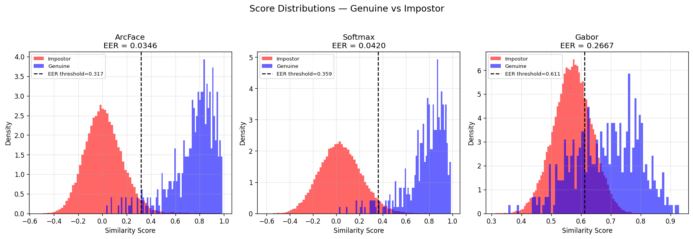
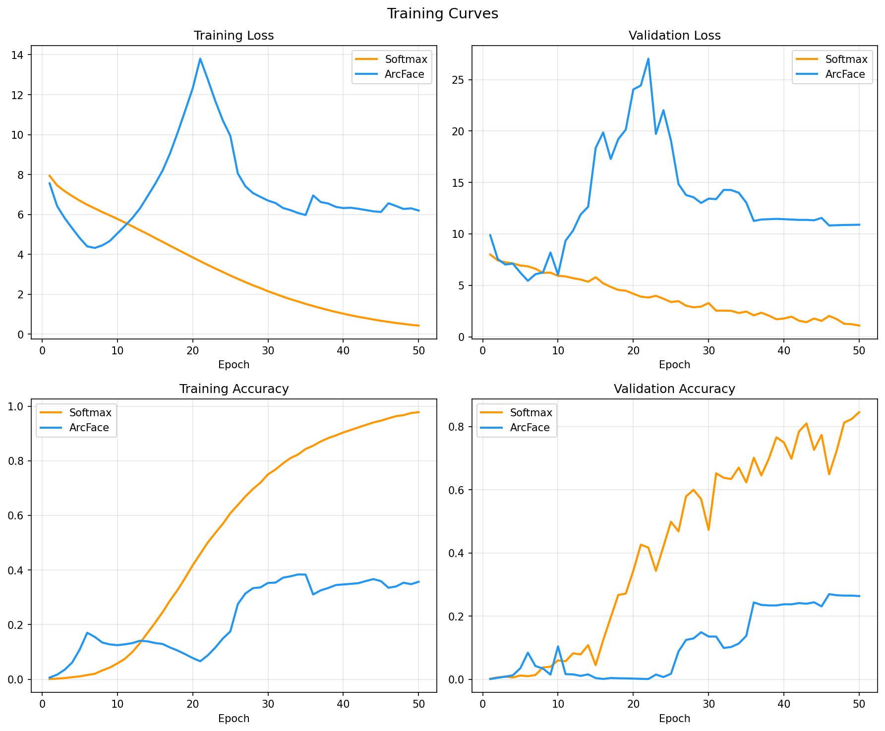
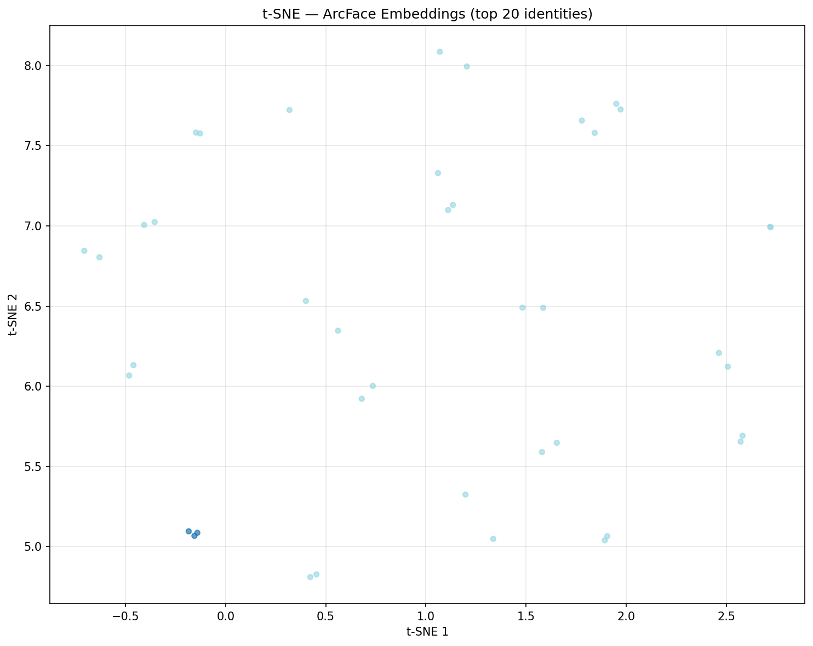
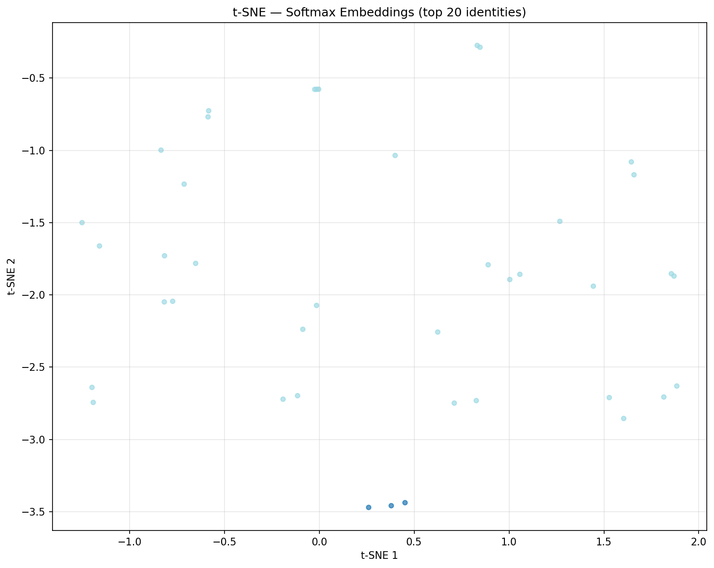

| Metric | ArcFace | Softmax | Gabor |
|---|---|---|---|
| EER (%) | 3.46% | 4.20% | 26.67% |
| TAR @ FAR=1% | 93.33% | 93.09% | 42.72% |
| TAR @ FAR=0.1% | 52.10% | 82.72% | 29.14% |
| EER Threshold | 0.3172 | 0.3594 | 0.6112 |
| Genuine Mean Score | 0.7523 | 0.7720 | 0.6863 |
| Impostor Mean Score | 0.0140 | 0.0380 | 0.5712 |
| Score Gap | 0.7383 | 0.7340 | 0.1151 |






| Optimizer | SGD (lr=0.01, momentum=0.9, wd=5e-4) |
| Batch Size | 64 |
| Epochs | 50 |
| Margin / Scale | m=0.5, s=64 (annealed from m=0, s=16) |
| Warmup | 5 epochs (pure cosine softmax) |
| Ramp-up | 15 epochs (linear to target) |
| LR Schedule | Step decay at 25/35/45 |
| Classes | 3,960 (min 2 samples/class) |
| Optimizer | Adam (lr=1e-3) |
| Batch Size | 32 |
| Epochs | 50 |
| Loss | CategoricalCrossentropy |
| Callbacks | ModelCheckpoint, EarlyStopping, ReduceLR |
| Classes | 4,115 (all identities) |
| Final Train Acc | 97.81% |
| Final Val Acc | 84.56% |